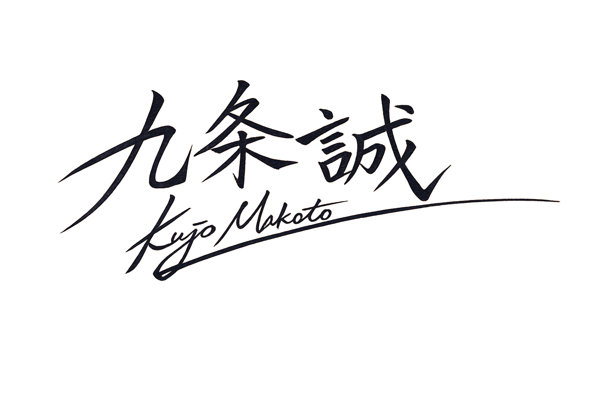

すべての情報を守り抜く。 それが私たちの揺るぎない信念です。
かつて私自身が、かけがえのないデータを失うという経験をしました。
その時の喪失感と、何としても取り戻したいという痛切な思いが、OMNIBUS ARCHIVEの原点です。
誰もが安心して情報を預け、必要な時に確実に取り出せる環境を作りたい。 その強い願いから、私はこの会社を設立いたしました。
デジタルデータは、単なる0と1の羅列ではありません。 そこには、人々の大切な想い出や、企業が積み上げてきた歴史が込められています。
私たちは、失われかけた「記憶」を復旧させる技術に対して、並々ならぬ誇りを持っています。
困難な状況であっても、決して諦めることなく、お客様の大切な資産を救い出すことが、私たちの使命です。
高度に情報化された現代社会において、信頼できるデータの保存と復元は、もはや社会のインフラそのものです。
私たちが提供するクリーンなアーカイブ技術は、情報の消失リスクを極限まで減らします。
それは、次世代へと正確な知識と記録を継承するための、最も強固な基盤となると確信しています。
